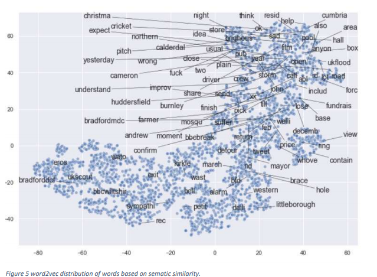

What is a thesis?
An empirical thesis is typically work conducted on a scientific level at the end of a degree. It is primarily based on data and can/ could be replicated if needed.
This project usually accounts for 1/3 of the academic year it is done in. Or in some cases 1/3 of the whole degree. It is a culmination and representation of all the skills and knowledge you have learnt during your time in education.

Evaluating flood disaster tweets through the use of text mining
With the increased usage of social media, information regarding major events has become more abundant. During these times people express their views on what is happening in their local surroundings via various mediums.
This gives rise to the potential of using such data to better understand and react to events such as floods.
Whereas traditional Methods such as image analysis are not suitable for understanding the impact such events have on the local community. Thus, we opted for tweet analysis as they are more personal to the event and community.
This paper hopes to develop system in which tweets are used and processed until the level of assigning a risk factor to them. This would subsequently aim to help local authorities in the west Yorkshire primarily the bradford city council understand the damage alongside future risks. This paper will traverse through the necessary steps which are needed for the project to work. Alongside any meaningful discoveries.
Conclusion of the work conducted
Twitter is a microblogging website which allows users to state whatever they want via their account. Having said this, we researched usage of this feature during crisis and public related events. During this we found many works which used tweets as a monitoring system or extraction system.
We also found out that the publics tweets are more likely to be genuine during these events. This led to the motivation to develop our algorithms. we aimed to create a program which would enable us to retrieve tweets which were then processed in order to be suitable for NLP vectorisation. We initially started with 3 embedding models but only 2 of them made it to our current stage in pipeline.
Furthermore, the system of classification we implemented judging by our results worked but had to be improved in regards to topic mapping and pre LDA classification. We found it difficult to assign topics in some clusters and some topics were overlapping in certain clusters.
Overall, we came shy of our goal due to missing a classification layer but reached a model with high potential.

Overall the experience was amazing. I'd recomend anyone to persue data science.